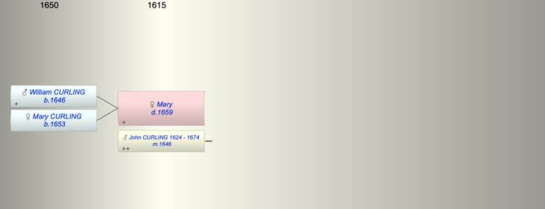

| [Index] |
| Mary ( - 1659) |
|  |
| m. abt 1646 John CURLING (1624 - 1674) |
| d. 13 Mar 1659 at St Peters, Thanet |
| Children (2): |
| William CURLING (1646 - ) |
| Mary CURLING (1653 - ) |
| Events in Mary ( - 1659)'s life | |||||
| Date | Age | Event | Place | Notes | Src |
| 1646 | Birth of son William CURLING | St Peters | Note 1 | ||
| abt 1646 | Married John CURLING (aged 22) | ||||
| 1653 | Birth of daughter Mary CURLING | St Peters | Note 2 | ||
| 13 Mar 1659 | Mary died | St Peters, Thanet | Note 3 | ||
| Created on a Mac™ using iFamily for Mac™ on 8 Oct 2023 |